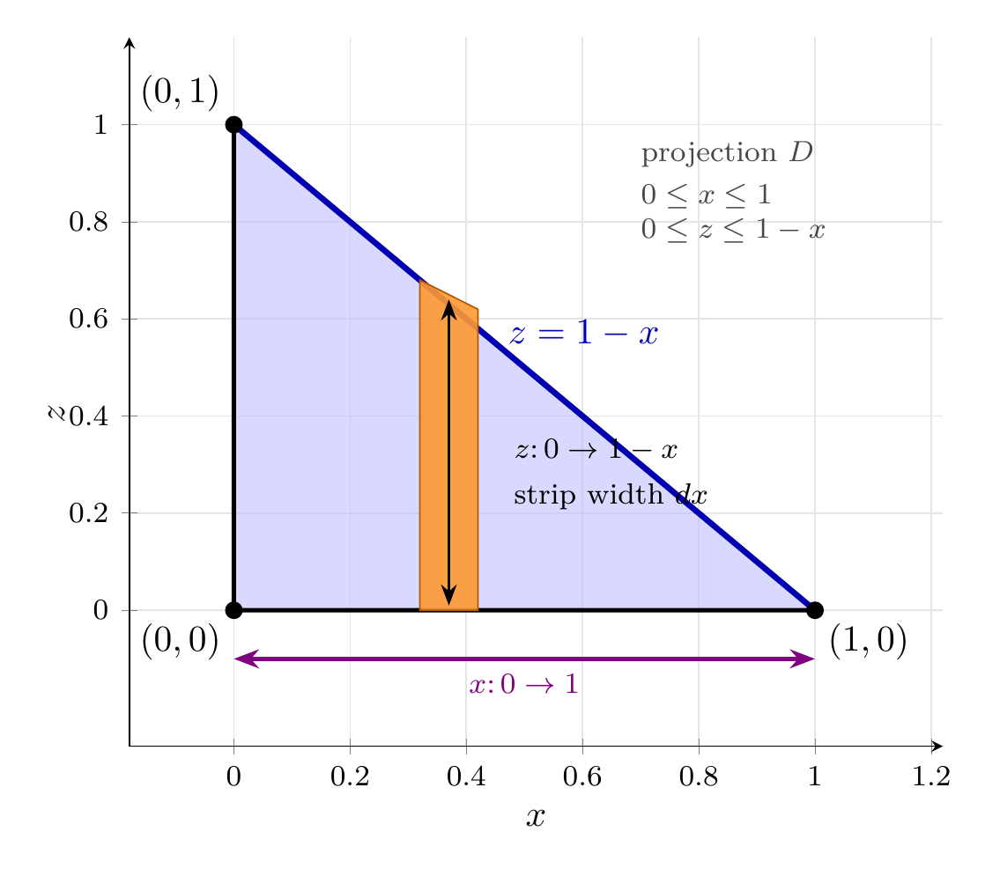
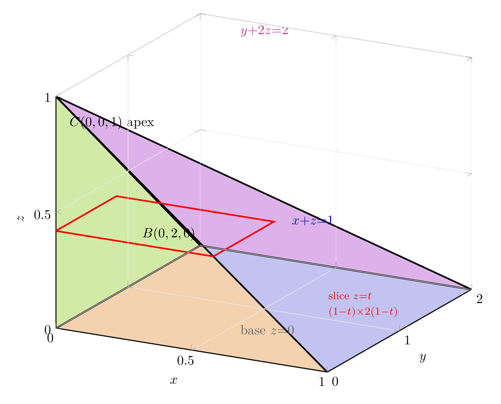
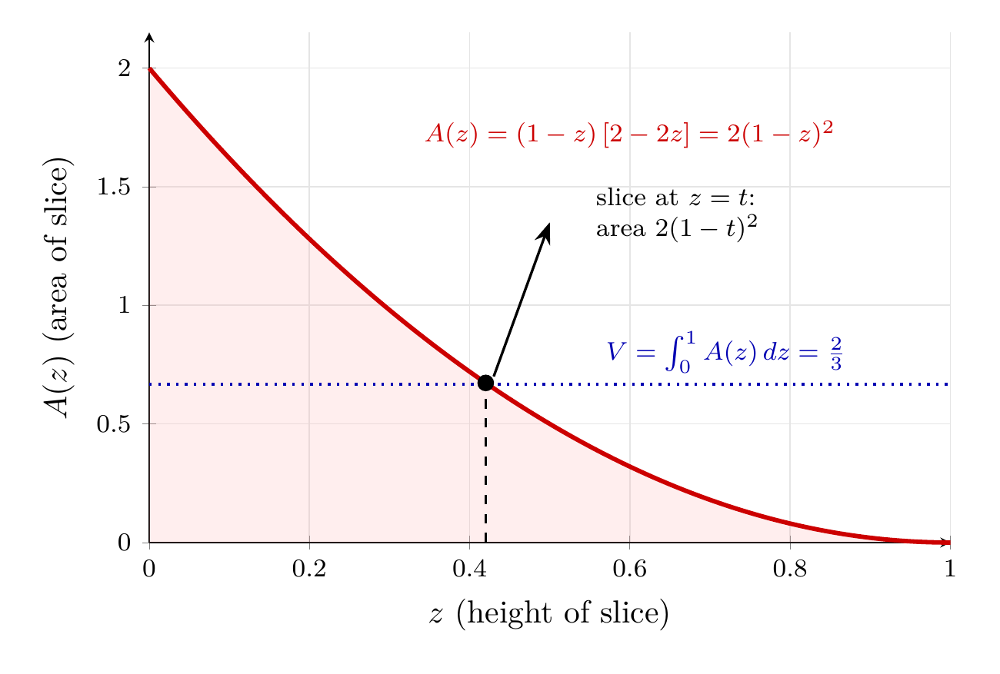

Please solve the problem in the following image.
(Image `20260927_233831_532383_utc_0800_0.png`. Alt text: Image: human_20260927_233831_532383_utc_0800)
20260927_233831_532383_utc_0800_0.png
End of problem
Answer
## Reading the iterated integral
$$
V=\int_{0}^{1}\!\int_{0}^{1-x}\!\int_{0}^{2-2z} dy\,dz\,dx
$$
The integration order is **inner $y$, middle $z$, outer $x$**, so each integral sign contributes two bounding surfaces:
| integral sign | limits | bounding surfaces |
|---|---|---|
| $\int_0^{2-2z} dy$ | $y=0$ to $y=2-2z$ | the planes $y=0$ and $y+2z=2$ |
| $\int_0^{1-x} dz$ | $z=0$ to $z=1-x$ | the planes $z=0$ and $x+z=1$ |
| $\int_0^{1} dx$ | $x=0$ to $x=1$ | the planes $x=0$ and $x=1$ |
Hence the solid is
$$
E=\{(x,y,z):\ 0\le x\le 1,\quad 0\le z\le 1-x,\quad 0\le y\le 2-2z\}.\tag{$\ast$}
$$
Since $0\le z\le 1-x$ already forces $0\le x\le 1$, the outer limits are redundant, and $y\le 2-2z$ keeps $y\ge0$. So equivalently
$$
E=\{(x,y,z):\ x\ge0,\ y\ge0,\ z\ge0,\ x+z\le1,\ y+2z\le2\},
$$
the **first octant cut by two planes** $x+z=1$ and $y+2z=2$.
---
## Step 1 — The $dz\,dx$ limits: the footprint in the $xz$-plane
Ignoring $y$ momentarily, the outer two integrals say that $(x,z)$ ranges over the triangle
$$
D=\{(x,z):\ 0\le x\le 1,\ 0\le z\le 1-x\},
$$
with vertices $(0,0),(1,0),(0,1)$. Over each point of $D$ the variable $y$ sweeps the segment $0\le y\le 2-2z$, whose length $2-2z$ shrinks linearly to $0$ as $z\to1$.
The plot shows $D$ with a typical vertical strip: height $1-x$ (the upper $z$-limit), width $dx$.
---
\documentclass[border=10pt]{standalone}
\usepackage{pgfplots}
\pgfplotsset{compat=1.18}
\usetikzlibrary{arrows.meta}
\begin{document}
\begin{tikzpicture}
\begin{axis}[
width=9.4cm, height=8.4cm,
xmin=-0.18, xmax=1.22, ymin=-0.28, ymax=1.18,
xtick={0,0.2,...,1.2}, ytick={0,0.2,...,1.0},
tick label style={font=\footnotesize},
xlabel=$x$, ylabel=$z$, xlabel style={below}, ylabel style={left},
grid=major, grid style={gray!20}, clip=false, axis lines=left,
every node/.style={font=\small},
]
% ---- projection triangle D ----
\addplot[fill=blue!25, fill opacity=.6, draw=black, very thick] coordinates {(0,0) (1,0) (0,1)} -- cycle;
% ---- hypotenuse z = 1-x highlighted ----
\addplot[blue!70!black, line width=1.6pt] coordinates {(0,1) (1,0)};
\node[blue!70!black, right] at (axis cs:0.45,0.57) {$z=1-x$};
% ---- typical vertical strip of width dx ----
\addplot[draw=orange!70!black, fill=orange!80, fill opacity=.9] coordinates {(0.32,0) (0.42,0) (0.42,0.62) (0.32,0.68)} -- cycle;
\draw[{Stealth[length=2mm]}-{Stealth[length=2mm]}, thick, black] (axis cs:0.37,0.01) -- (axis cs:0.37,0.64);
\node[right, align=left, font=\footnotesize] at (axis cs:0.46,0.28) {$z\colon 0\to 1-x$\\[3pt] strip width $dx$};
% ---- x range ----
\draw[{Stealth[length=2.4mm]}-{Stealth[length=2.4mm]}, very thick, violet] (axis cs:0,-0.10) -- (axis cs:1,-0.10);
\node[violet, below, font=\footnotesize] at (axis cs:0.5,-0.105) {$x\colon 0\to 1$};
% ---- corner dots and labels ----
\addplot[only marks, mark=*, mark size=2.2pt, black] coordinates {(0,0) (1,0) (0,1)};
\node[below left] at (axis cs:0,0) {$(0,0)$};
\node[below right] at (axis cs:1,0) {$(1,0)$};
\node[above left] at (axis cs:0,1) {$(0,1)$};
\node[align=left, font=\footnotesize, black!72] at (axis cs:0.86,0.86)
{projection $D$\\[2pt] $0\le x\le 1$\\ $0\le z\le 1-x$};
\end{axis}
\end{tikzpicture}
\end{document}

pgfplots_0.png
---
## Step 2 — Identify the five faces and the vertices
From $(\ast)$ the boundary of $E$ has five pieces:
1. **Base** $z=0$: $0\le x\le1,\ 0\le y\le2$ — the full $1\times2$ rectangle.
2. **Back** $x=0$: triangle $(0,0,0),(0,2,0),(0,0,1)$.
3. **Side** $y=0$: triangle $(0,0,0),(1,0,0),(0,0,1)$.
4. **Slanted plane** $x+z=1$: triangle $(1,0,0),(1,2,0),(0,0,1)$.
5. **Slanted plane** $y+2z=2$: triangle $(0,2,0),(1,2,0),(0,0,1)$.
Where do the two slanted planes meet? On the $z$-axis ($x=0$, $y=0$) they give $z=1$ and $z=1$ — the **same** point $(0,0,1)$. Thus the corner set is
$$
O(0,0,0),\quad A(1,0,0),\quad D(1,2,0),\quad B(0,2,0),\quad C(0,0,1),
$$
and **$E$ is a pyramid whose base is the rectangle** $[0,1]\times[0,2]$ in the plane $z=0$, with **apex $C(0,0,1)$** sitting directly above the corner $O$. Because both roof planes pass through that apex, the solid has only five faces — it is a pyramid, *not* a wedge.
---
\documentclass[border=10pt]{standalone}
\usepackage{pgfplots}
\pgfplotsset{compat=1.18}
\begin{document}
\begin{tikzpicture}
\begin{axis}[
view={28}{22},
width=12.5cm, height=11cm,
xmin=0, xmax=1, ymin=0, ymax=2, zmin=0, zmax=1,
xtick={0,0.5,1}, ytick={0,1,2}, ztick={0,0.5,1},
xlabel=$x$, ylabel=$y$, zlabel=$z$,
grid=major, grid style={gray!18},
axis on top, enlargelimits=false,
every node/.style={font=\small},
]
% ---------- faces ----------
\addplot3[fill=black!20, fill opacity=.38, draw=none] coordinates {(0,0,0) (1,0,0) (1,2,0) (0,2,0)}; % base z=0
\addplot3[fill=orange!60, fill opacity=.45, draw=none] coordinates {(0,0,0) (1,0,0) (0,0,1)}; % face y=0
\addplot3[fill=green!45, fill opacity=.40, draw=none] coordinates {(0,0,0) (0,2,0) (0,0,1)}; % face x=0
\addplot3[fill=blue!55, fill opacity=.33, draw=none] coordinates {(1,0,0) (1,2,0) (0,0,1)}; % x+z=1
\addplot3[fill=magenta!55,fill opacity=.33, draw=none] coordinates {(0,2,0) (1,2,0) (0,0,1)}; % y+2z=2
% ---------- edges ----------
\addplot3[very thick, draw=black] coordinates {(0,0,0) (1,0,0) (1,2,0) (0,2,0) (0,0,0)};
\addplot3[very thick, draw=black] coordinates {(1,0,0) (0,0,1) (0,2,0)};
\addplot3[very thick, draw=black] coordinates {(0,0,0) (0,0,1)};
\addplot3[very thick, draw=black] coordinates {(1,2,0) (0,0,1)};
% ---------- typical horizontal slice z = t = 0.42 ----------
\addplot3[red, very thick] coordinates {(0.58,0,0.42) (0.58,0.84,0.42) (0,0.84,0.42) (0,0,0.42) (0.58,0,0.42)};
\addplot3[red, dashed, thin] coordinates {(0,0,0) (0,0,0.42)};
% ---------- labels ----------
\node[below left] at (axis cs:0,0,0) {$O$};
\node[below right] at (axis cs:1,0,0) {$A(1,0,0)$};
\node[right] at (axis cs:1,2,0) {$D(1,2,0)$};
\node[above left] at (axis cs:0,2,0) {$B(0,2,0)$};
\node[below right, black] at (axis cs:0.02,0.05,0.93) {$C(0,0,1)$ apex};
\node[blue!70!black] at (axis cs:0.92,0.10,0.62) {$x{+}z{=}1$};
\node[magenta!70!black] at (axis cs:0.25,1.95,0.98) {$y{+}2z{=}2$};
\node[black!62] at (axis cs:0.50,1.05,-0.10) {base $z{=}0$};
\node[red, align=left, font=\footnotesize] at (axis cs:1.02,0.42,0.22) {slice $z{=}t$\\[2pt] $(1{-}t){\times}2(1{-}t)$};
\end{axis}
\end{tikzpicture}
\end{document}

pgfplots_1.png
---
## Step 3 — Evaluate the integral and check it geometrically
**Inner ($y$):** $\displaystyle\int_0^{2-2z}dy=2-2z.$
**Middle ($z$):**
$$
\int_0^{1-x}(2-2z)\,dz=\big[2z-z^2\big]_0^{1-x}=2(1-x)-(1-x)^2=1-x^2.
$$
**Outer ($x$):**
$$
V=\int_0^{1}(1-x^2)\,dx=\Big[x-\tfrac{x^3}{3}\Big]_0^{1}=1-\tfrac13=\tfrac23.
$$
**Check 1 — pyramid formula.** Base area $1\cdot2=2$, height $1$:
$\ V=\tfrac13\cdot2\cdot1=\tfrac23.\ \checkmark$
**Check 2 — slicing perpendicular to the $z$-axis.** At height $z=t$ the section is $0\le x\le1-t$, $0\le y\le2-2t$, a rectangle of area $A(t)=2(1-t)^2$, so
$$
V=\int_0^1 2(1-t)^2\,dt=\Big[-\tfrac23(1-t)^3\Big]_0^1=\tfrac23.\ \checkmark
$$
The area decays *quadratically* to $0$ at the apex — the signature of a pyramid, as the plot below shows.
**Check 3 — reverse to $dz\,dy\,dx$.** Projecting onto the rectangle $[0,1]\times[0,2]$, the roof is $z=\min(1-x,\,1-\tfrac y2)$, switching across the line $y=2x$:
$\ \int_0^1\!\int_0^{2x}(1-x)\,dy\,dx=\tfrac13$ and $\int_0^1\!\int_{2x}^{2}(1-\tfrac y2)\,dy\,dx=\tfrac13$, total $\tfrac23.\ \checkmark$
A direct 3D indicator (Riemann) sum over the box $[0,1]\times[0,2]\times[0,1]$ gives $0.669\approx\tfrac23$, confirming the sketched region.
---
\documentclass[border=10pt]{standalone}
\usepackage{pgfplots}
\pgfplotsset{compat=1.18}
\usetikzlibrary{arrows.meta}
\begin{document}
\begin{tikzpicture}
\begin{axis}[
width=10.4cm, height=7.2cm,
domain=0:1, samples=120,
xmin=0, xmax=1, ymin=0, ymax=2.15,
xtick={0,0.2,...,1.0}, ytick={0,0.5,...,2.0},
tick label style={font=\footnotesize},
xlabel={$z$ (height of slice)}, ylabel={$A(z)$ (area of slice)},
grid=major, grid style={gray!20}, clip=false, axis lines=left,
every node/.style={font=\small},
]
\addplot[fill=red!30, fill opacity=.22, draw=none] {2*(1-x)^2} \closedcycle;
\addplot[red!80!black, line width=1.4pt] {2*(1-x)^2};
\node[red!80!black, align=left, font=\footnotesize] at (axis cs:0.60,1.72)
{$A(z)=(1-z)\,[2-2z]=2(1-z)^2$};
\draw[dashed, thick, black] (axis cs:0.42,0) -- (axis cs:0.42,0.6728);
\addplot[only marks, mark=*, mark size=2.4pt, black] coordinates {(0.42,0.6728)};
\draw[{Stealth[length=2.4mm]}-, thick, black] (axis cs:0.50,1.35) -- (axis cs:0.43,0.70);
\node[align=left, font=\footnotesize] at (axis cs:0.66,1.38) {slice at $z=t$:\\ area $2(1-t)^2$};
\draw[dotted, thick, blue!70!black] (axis cs:0,0.6667) -- (axis cs:1,0.6667);
\node[blue!70!black, font=\footnotesize, above] at (axis cs:0.72,0.6667) {$V=\int_0^1 A(z)\,dz=\frac{2}{3}$};
\end{axis}
\end{tikzpicture}
\end{document}

pgfplots_2.png
---
## Summary — how to sketch this kind of solid
Work **inside-out**: each integral sign contributes two bounding surfaces, and inner limits may depend on the variables fixed later.
- $0\le y\le2-2z$ $\Rightarrow$ planes $y=0$ and $y+2z=2$;
- $0\le z\le1-x$ $\Rightarrow$ planes $z=0$ and $x+z=1$;
- $0\le x\le1$ $\Rightarrow$ redundant, because $x+z\le1$ with $x,z\ge0$ already gives $x\le1$.
The key geometric observation is that both slanted planes contain the single point $(0,0,1)$, so the roof collapses to an apex above the corner $O$ and the horizontal slices are rectangles $(1-z)\times2(1-z)$ shrinking to that apex.
Faces: $z=0$, $x=0$, $y=0$, $x+z=1$, $y+2z=2$. Vertices: $(0,0,0),(1,0,0),(1,2,0),(0,2,0),(0,0,1)$.
$$
\boxed{\text{Solid } = \text{ pyramid: base } [0,1]\times[0,2]\times\{0\},\ \text{apex } (0,0,1),\quad V=\tfrac{2}{3}}
$$